《追色手记14》学习资料
东京祐：生活感日杂风与 Lightroom 仿色实操
视频标题 | 【追色手记14】万人求更！东京祐的超美日杂风，核心思路揭秘 |
作者 | 摄影师聿铭 |
时长 | 约 8 分 50 秒 |
来源 | https://www.bilibili.com/video/BV11w411v71a/ |
整理日期 | 2026-05-22 |
说明：本文根据视频音频转写、画面截取与内容校对整理，保留学习所需的方法、步骤和关键截图，不包含逐字稿。
东京祐作品参考截图
以下为视频中展示的东京祐作品和分析画面截图，用来观察生活感题材、日杂审美、直方图暗部缺失和淡蓝暗部倾向。它们是视频截图，可能保留字幕、界面或讲解标注。
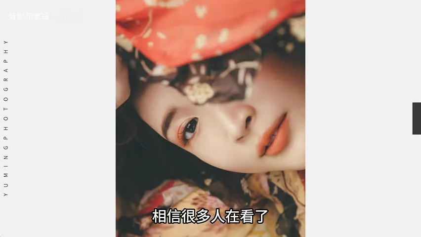 近景人像：生活中的高级感 | 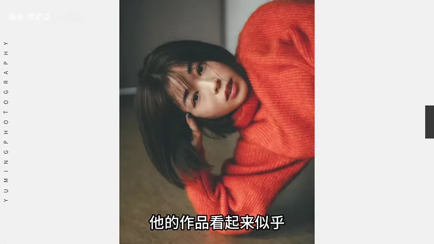 红毛衣肖像：自然日常 |
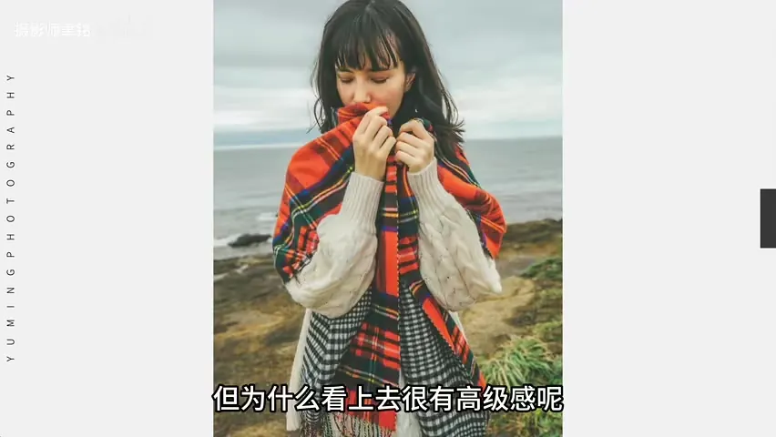 户外行走：杂志化生活片段 | 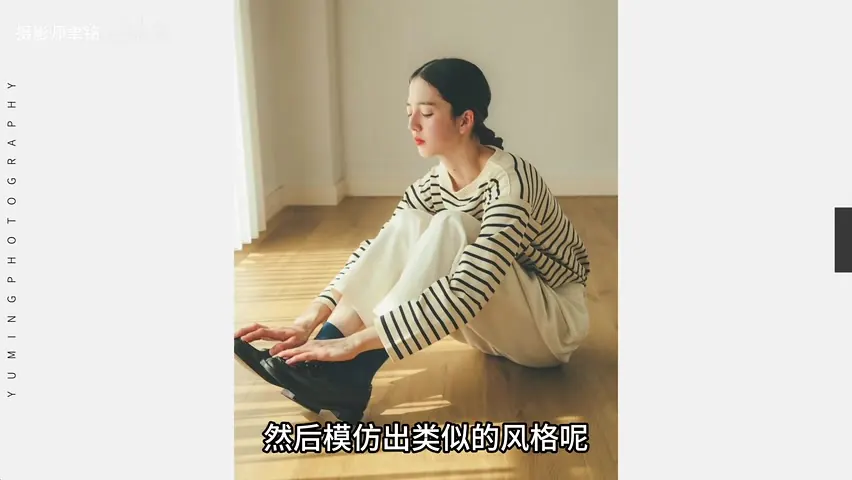 室内场景：普通空间的秩序 |
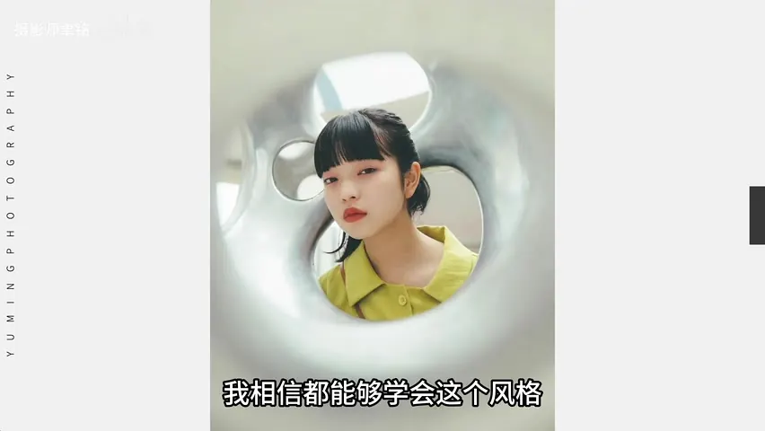 清爽人像：干净柔和 | 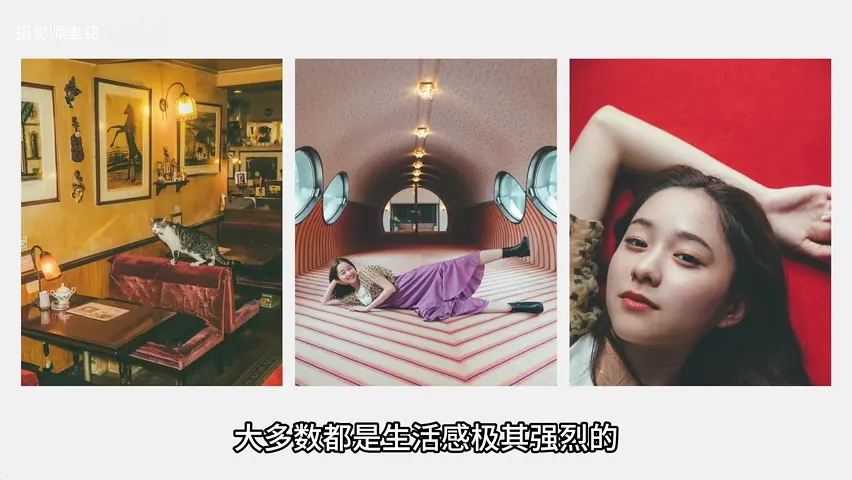 生活场景拼图：题材范围 |
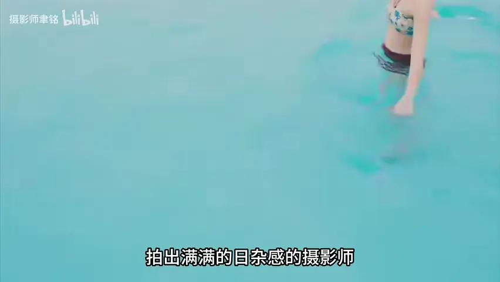 泳池蓝调：生活感与色彩 | 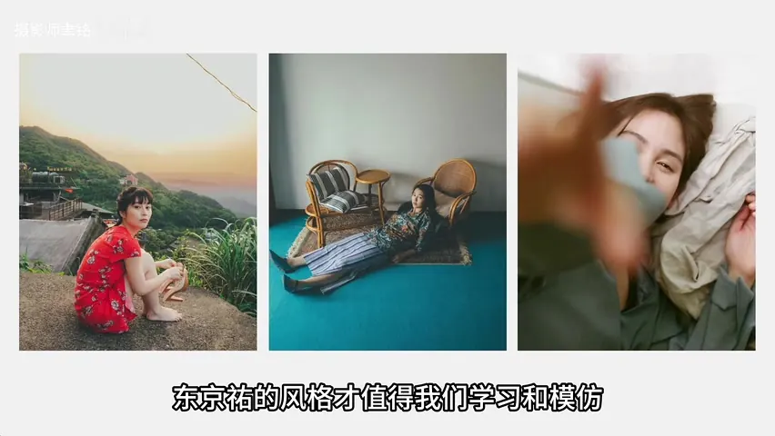 家人日常：可模仿题材 |
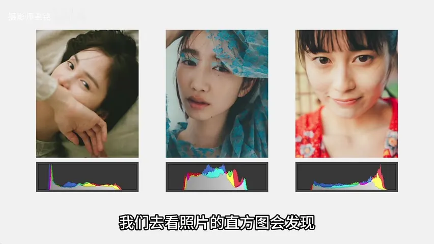 直方图示例：亮暗多元 | 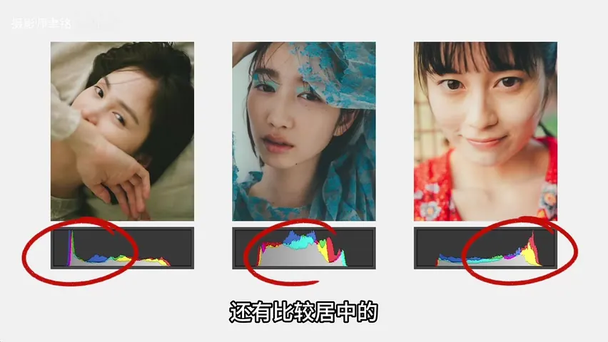 暗部缺失：哑光质感 |
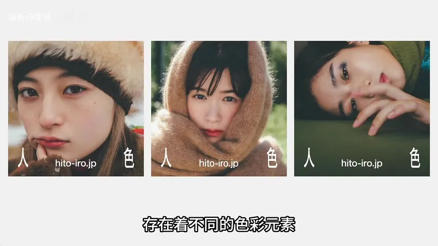 暗部取色：淡蓝倾向 | 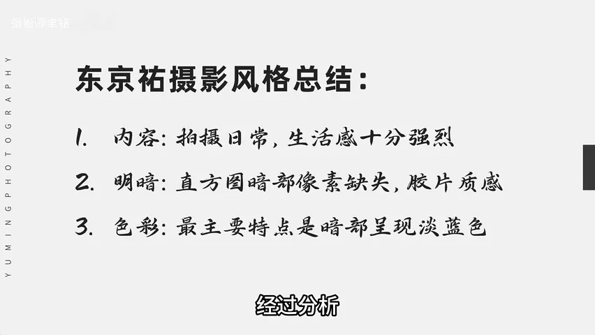 风格总结：内容/明暗/色彩 |
一页速览
风格核心 | 东京祐的高级感不是靠复杂处理，而是把生活化场景拍出日杂感：观察视角、审美和克制后期共同成立。 |
内容特点 | 日常、家人、生活片段、室内外自然场景都可以成为素材；重点是让普通场景有画面秩序和杂志感。 |
影调特点 | 明暗不固定，直方图可以靠左、靠右或居中；共同点是暗部像素缺失，形成哑光、发灰、柔和的日杂质感。 |
色彩特点 | 没有固定主色，因为场景差异较大；但暗部常有淡蓝倾向，是统一氛围的重要线索。 |
实操顺序 | 方形裁剪 -> 色温降冷 -> 降曝光/对比/高光白色 -> 提阴影压黑色 -> 降饱和 -> 曲线抬黑压白 -> 校准右右左 -> 阴影青蓝 -> 暗角颗粒 -> 局部皮肤。 |
学习目标
能把东京祐风格拆成生活内容、明暗关系、暗部质感、淡蓝暗部和局部皮肤处理。
理解“日杂感”不等于统一调暗或调亮，而是由审美、构图和哑光影调共同形成。
能通过直方图识别暗部像素缺失，并用曲线抬黑压白做出柔和质感。
掌握校准面板右右左、颜色分级阴影青蓝、暗角颗粒和皮肤蒙版的使用顺序。
能在不大幅改动所有颜色的前提下，把普通生活照片整理成干净、柔和、有氛围的日杂风。
核心方法：五层拆解
维度 | 观察重点 | 本片结论 |
内容 | 场景是否生活化，是否有日常记录感。 | 东京祐擅长把普通生活场景拍出日杂感，适合学习者用于家人、日常和旅行照片。 |
审美 | 画面是否有秩序、视角是否独特。 | 作者强调审美是摄影师天花板，技术只是实现审美的工具。 |
影调 | 直方图位置与黑位状态。 | 亮暗关系多元，但暗部普遍缺失像素，形成哑光发灰的柔和质感。 |
色彩 | 是否存在稳定色彩线索。 | 主色随场景变化，但暗部有淡蓝倾向，给画面统一的冷静空气感。 |
后期 | 调色是否克制、是否保留生活感。 | 先用基础和曲线塑造质感，再用校准、HSL、颜色分级、颗粒和蒙版收尾。 |
Lightroom 实操流程
选择参考与裁剪：找一张风格接近的东京祐作品放在旁边观察；如果参考图是正方形构图，可先把练习素材裁成方形，让画面关系接近。
冷却色温：下午阳光素材容易偏黄，适当降低色温可以减少脏黄感，让画面更干净。
基础柔化：降低曝光和对比度，让画面更柔；高光和白色色阶下压，保护手背等亮部；阴影提亮，暗部细节更丰富。
压实暗部：提阴影后画面会发灰，这时压黑色色阶，让暗部更实、层次更明显。整体颜色太浓时，稍微降低饱和度。
曲线做哑光质感：抬高曲线最左端，让直方图暗部出现像素缺失；再压回中间调和暗部，避免整体过灰；压低右端，让亮部更柔和。
校准统一色彩：阴影滑块往左偏绿；红、绿、蓝三原色色相按右右左调整，帮助画面颜色统一。整体饱和度可适当降低。
HSL 修关键色：橙色主要影响肤色，提高橙色明亮度，让皮肤更白皙通透；饱和度略提，避免过苍白；绿色色相略往黄色靠，接近参考图翠绿感。
颜色分级加氛围：在阴影中注入一点青蓝色，色相约 210，适当给饱和度，画面会立刻更有氛围。
细节与效果：降噪、移除色差可做轻微修饰；效果面板加少量暗角和颗粒，增强中心注意力和日杂胶片感。
局部皮肤蒙版：用画笔选中脸、脖子、手背等皮肤区域，略提曝光、降低纹理，得到更白净细腻的皮肤质感。
工具速查表
工具 | 用途 | 本片操作 | 注意点 |
裁剪 | 贴近参考图构图 | 可裁成 1:1 方形。 | 不是必须步骤，取决于参考图和原片关系。 |
白平衡 | 去脏黄、变干净 | 色温适当降低。 | 冷色只是干净感来源之一，不能让肤色发青。 |
基础面板 | 建立柔和低对比基础 | 降曝光、对比、高光、白色；提阴影；压黑色。 | 提阴影后记得用黑色色阶找回层次。 |
曲线 | 制造哑光日杂质感 | 左端上提，右端下压，中间调压回。 | 只抬黑会过灰，必须用中间点拉回层次。 |
校准 | 统一整体色彩 | 阴影偏绿，红绿蓝右右左。 | 校准影响全局，幅度要克制。 |
HSL | 修肤色和绿色 | 橙色提亮、饱和略升；绿色往黄。 | 只处理关键颜色，不做大范围乱调。 |
颜色分级 | 给暗部淡蓝空气感 | 阴影色相约 210。 | 青蓝是氛围，不是把全图染蓝。 |
效果 | 增强日杂质感 | 少量暗角和颗粒。 | 暗角不要像边框，颗粒要服务质感。 |
蒙版画笔 | 精修皮肤 | 皮肤区域提曝光、降纹理。 | 局部提亮要自然，避免脸和身体割裂。 |
关键截图与讲解
图 01 | 00:20 | 东京祐日杂风引入。
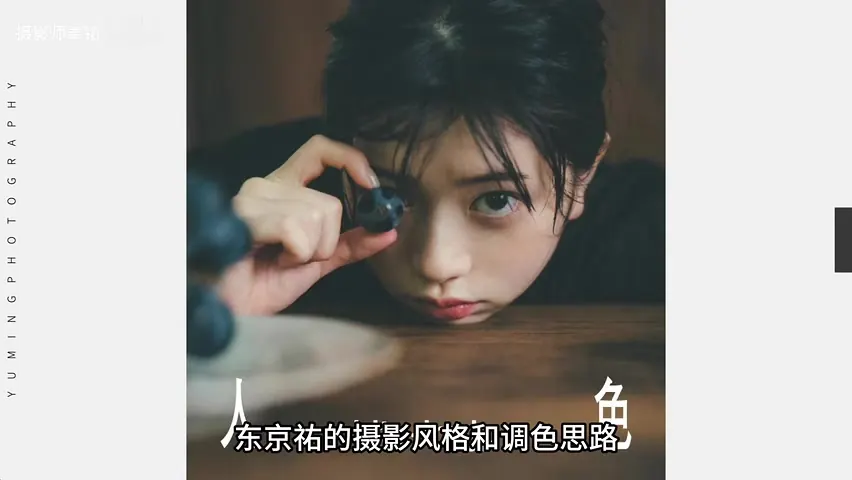
学习要点：本期目标是拆清看似处理不多、却很有高级感的核心思路。
图 02 | 01:03 | 生活感题材。
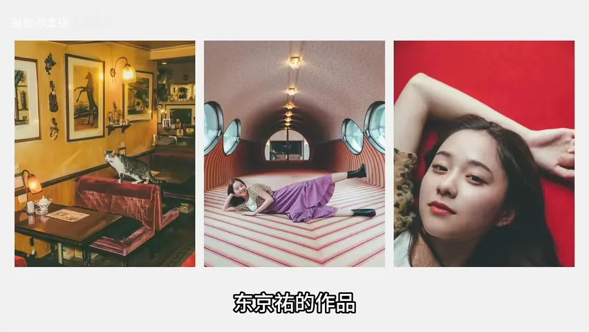
学习要点：东京祐擅长把生活化场景拍成日杂感，这是最值得学习的地方。
图 03 | 01:13 | 审美视角。
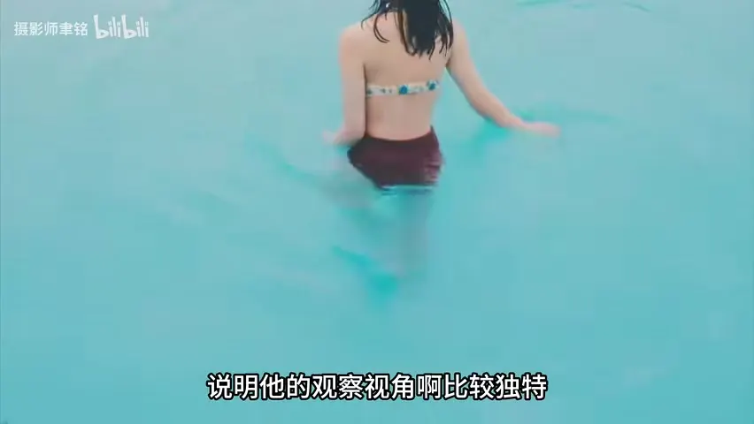
学习要点：教程强调审美比技术更像天花板，调色要服务这种观察方式。
图 04 | 01:39 | 直方图亮暗多元。
学习要点：东京祐作品并非统一偏暗或偏亮，而是随环境变化。
图 05 | 02:11 | 暗部像素缺失。
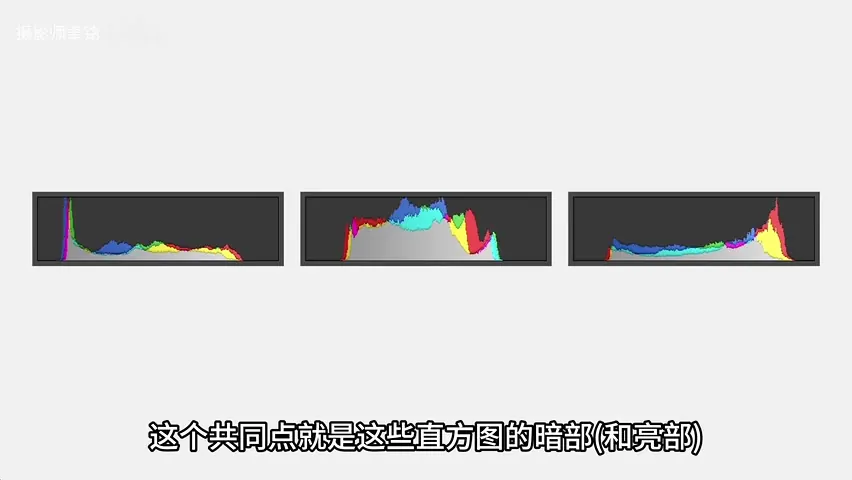
学习要点：共同点是暗部没有像素，形成哑光、发灰、柔和的日杂质感。
图 06 | 02:48 | 暗部淡蓝倾向。
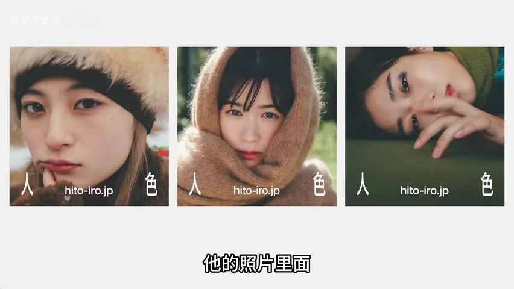
学习要点：不同场景颜色不一样，但暗部淡蓝是可复现的色彩线索。
图 07 | 03:17 | 进入 Lightroom 对照参考。
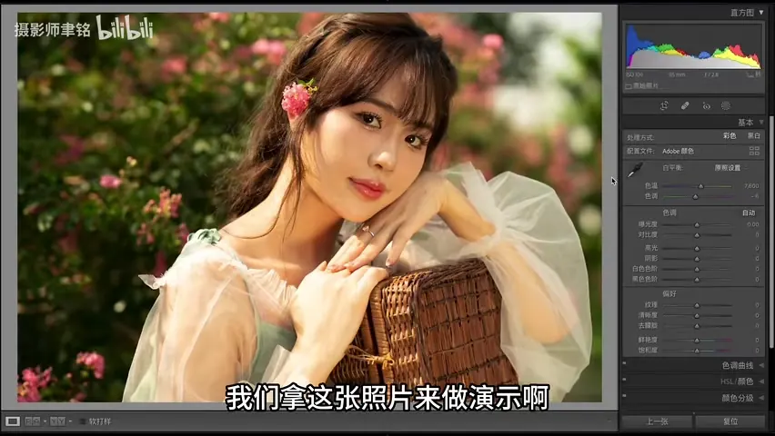
学习要点：把参考图放在旁边，边观察边调整。
图 08 | 03:30 | 方形裁剪。
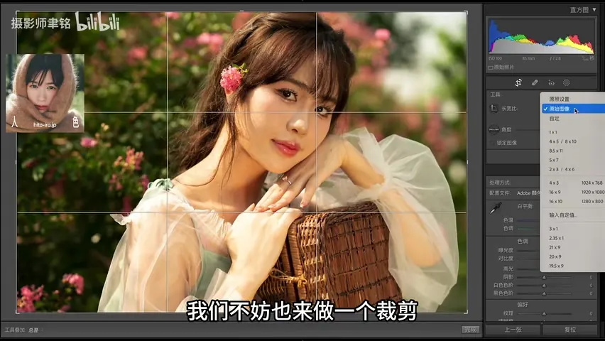
学习要点：参考图是正方形，所以先让构图关系更接近。
图 09 | 03:43 | 降低色温。
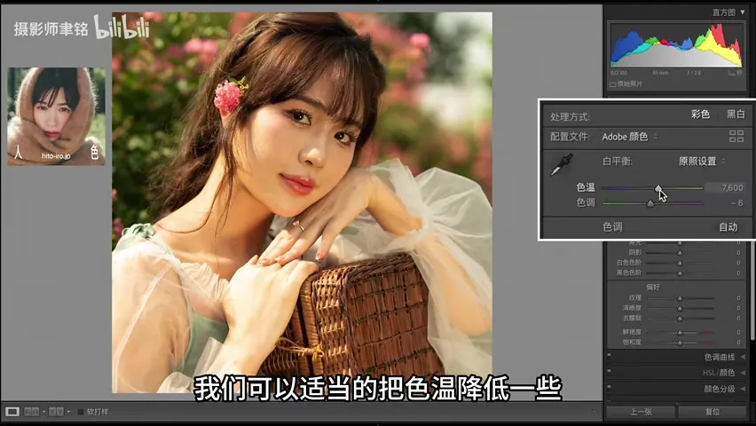
学习要点：去掉下午阳光造成的偏黄，画面更干净。
图 10 | 04:00 | 降低曝光和对比。
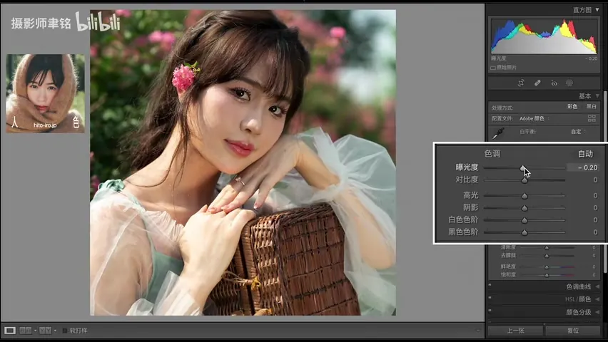
学习要点：画面总体偏亮，降低曝光；低对比让人像更柔美。
图 11 | 04:16 | 高光白色下压、阴影上提。
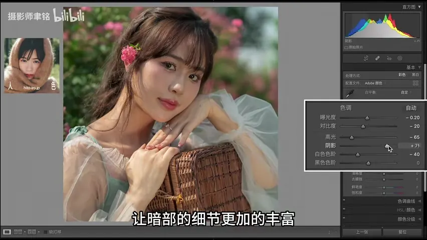
学习要点：保护亮部手背，同时让暗部细节更丰富。
图 12 | 04:23 | 黑色色阶压实暗部。
学习要点：提阴影后的发灰感，用黑色色阶拉回层次和质感。
图 13 | 04:34 | 降低饱和度。
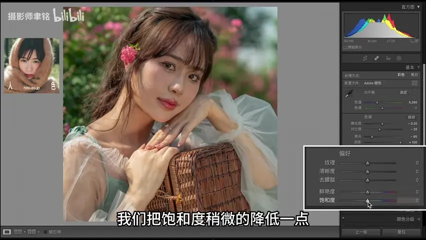
学习要点：让浓郁颜色收敛，进入更克制的日杂气质。
图 14 | 04:52 | 曲线左端上提。
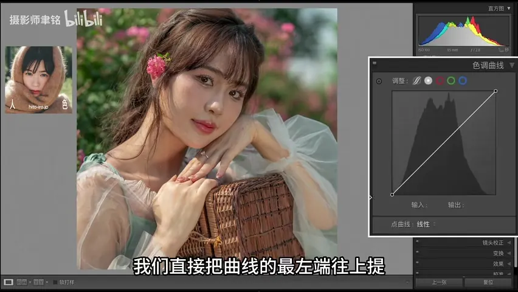
学习要点：制造暗部像素缺失和哑光质感。
图 15 | 05:05 | 中间调和暗部压回。
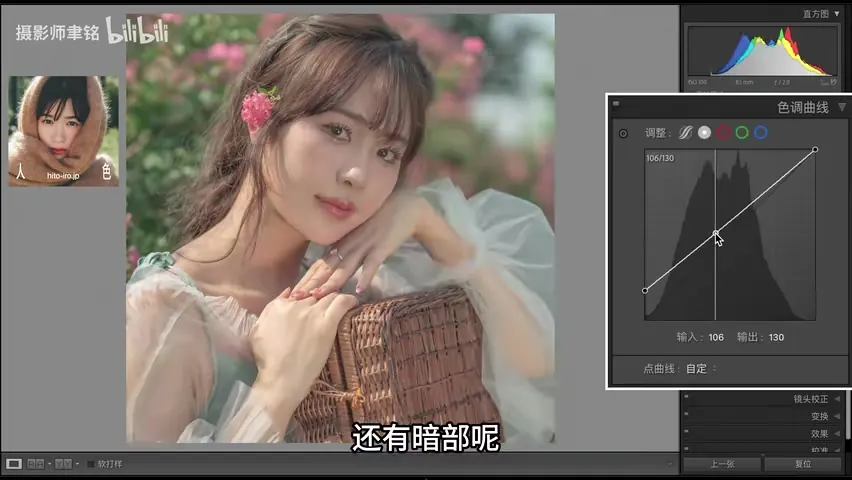
学习要点：避免只抬黑导致整张图太灰。
图 16 | 05:15 | 曲线右端下压。
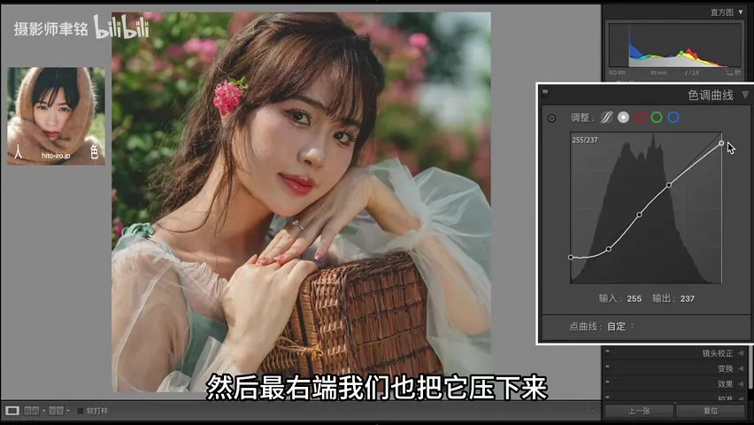
学习要点：让亮部不那么亮，整体更柔。
图 17 | 05:31 | 校准阴影偏绿。
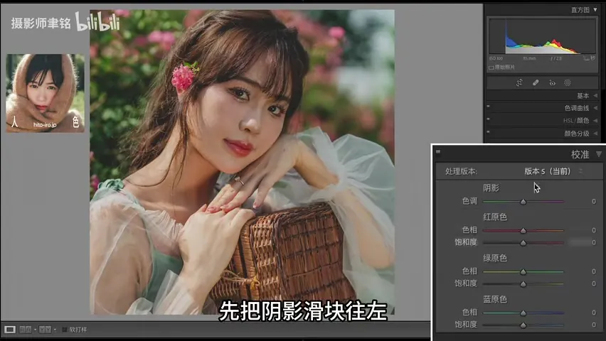
学习要点：阴影滑块往左，给暗部一点绿色倾向。
图 18 | 05:48 | 校准右右左。
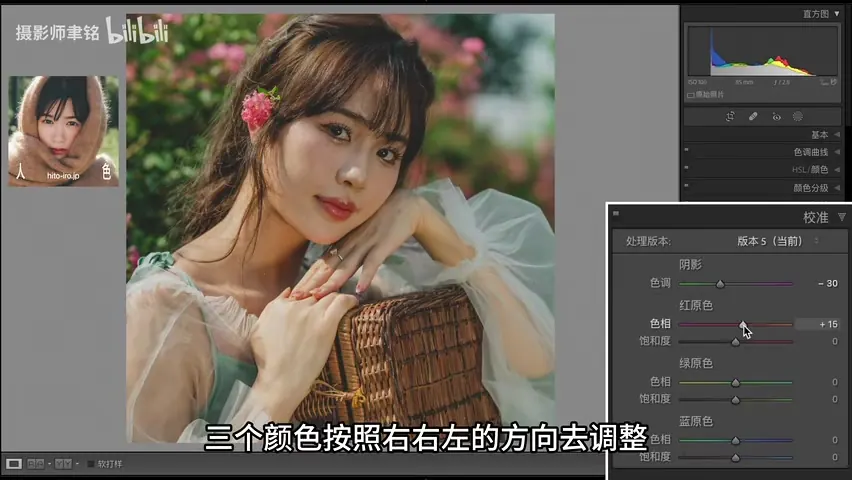
学习要点：红、绿、蓝色相按右右左统一画面颜色。
图 19 | 06:10 | HSL 橙色修肤色。
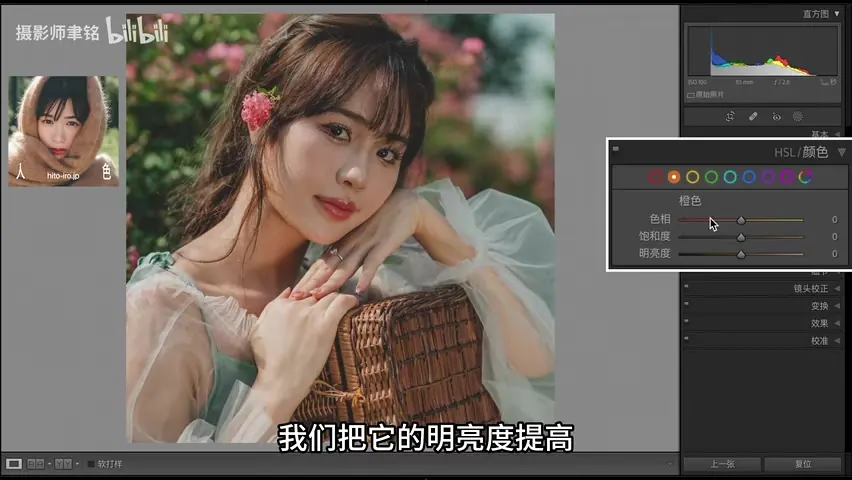
学习要点：提亮肤色并略加饱和，让皮肤白皙但不苍白。
图 20 | 06:25 | 绿色色相往黄。
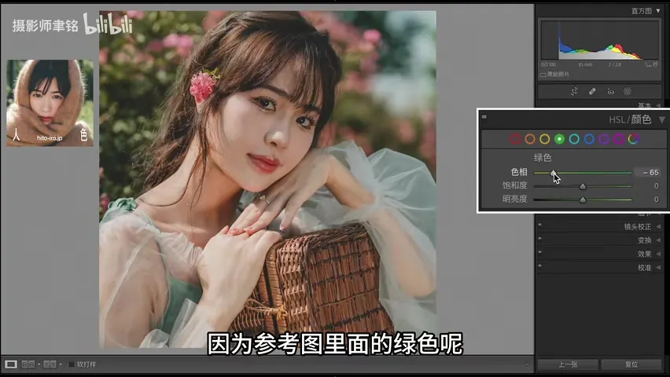
学习要点：让绿色更接近参考图中偏翠、偏黄的感觉。
图 21 | 06:42 | 颜色分级：阴影青蓝。
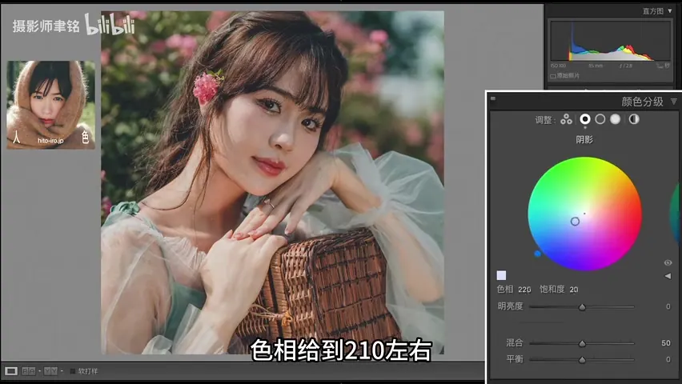
学习要点：阴影注入青蓝色，画面氛围立刻变强。
图 22 | 07:13 | 效果：暗角。
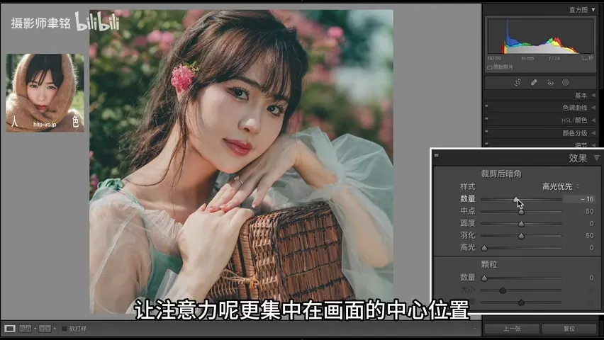
学习要点：注意力回到中心，画面更集中。
图 23 | 07:25 | 效果：颗粒。
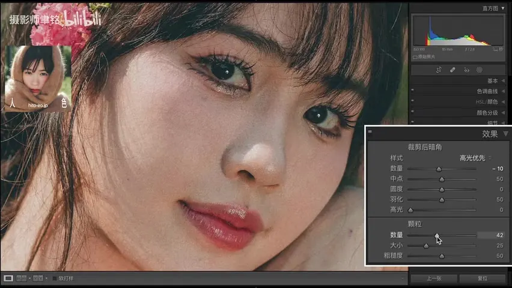
学习要点：放大能看到颗粒，增强日杂胶片质感。
图 24 | 07:43 | 蒙版：皮肤局部。
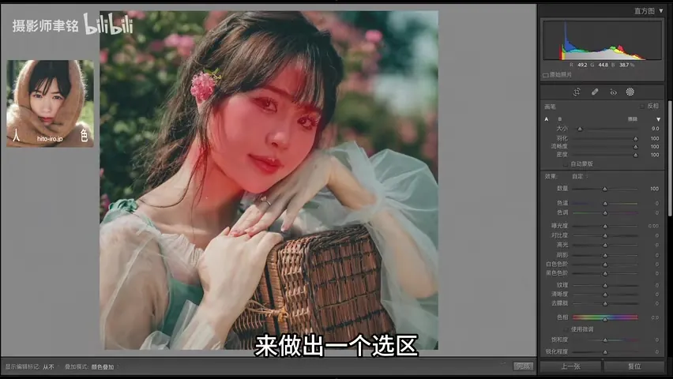
学习要点：脸、脖子、手背提曝光并降低纹理，形成轻微磨皮。
图 25 | 08:12 | 最终前后对比。
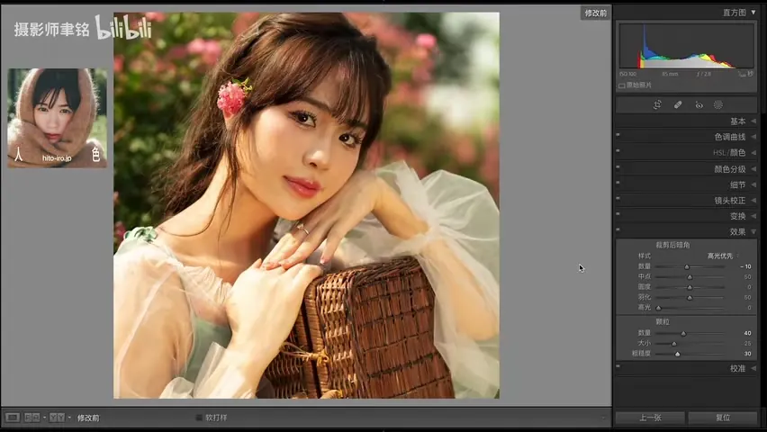
学习要点：普通阳光人像被整理成柔和、干净、有生活感的日杂风。
练习任务
选一张生活感强的人像或家人日常照片，不要先追求大场景或夸张妆造。
找一张东京祐参考图，先比较内容、构图、直方图暗部和暗部颜色。
用基础面板把偏黄阳光调得更干净，同时降低对比、保护高光、提亮阴影。
用曲线抬黑压白，并观察直方图暗部是否出现缺失；如果发灰，就压回中间调。
用校准右右左统一色彩，再用 HSL 只修肤色和绿色。
给阴影加一点青蓝，最后用暗角、颗粒和皮肤蒙版做轻量收尾。
复盘清单
检查项 | 通过标准 |
内容 | 画面有自然生活感，不像刻意棚拍或重度摆拍。 |
影调 | 明暗不必固定，但暗部有哑光缺失感，整体柔和。 |
直方图 | 暗部不顶边，黑位被抬起；亮部不过曝、不刺眼。 |
色温 | 去掉脏黄后画面干净，肤色不发青。 |
暗部颜色 | 有淡蓝/青蓝倾向，但不把全图染成蓝色。 |
肤色 | 白净通透，有轻微红润，不苍白、不塑料。 |
质感 | 暗角和颗粒存在感轻，服务日杂氛围。 |
整体 | 看起来像“生活被整理得更好看”，而不是参数痕迹很重。 |
时间轴速查
时间 | 模块 | 重点 |
00:07-00:55 | 课程引入 | 说明东京祐风格高级感来自核心思路，而不只是复杂后期。 |
00:55-01:35 | 内容分析 | 生活感极强，能把普通日常拍成日杂感。 |
01:35-02:31 | 明暗分析 | 直方图亮暗多元，但暗部像素缺失形成哑光质感。 |
02:31-03:15 | 色彩分析 | 没有固定主色，但暗部常有淡蓝倾向。 |
03:15-04:34 | 基础调整 | 参考图对照、方形裁剪、降色温、降曝光对比、高光白色、提阴影压黑色、降饱和。 |
04:34-05:25 | 曲线 | 抬黑、压回中间调、压白，重塑明暗关系。 |
05:25-06:00 | 校准 | 阴影偏绿，红绿蓝右右左，降低整体鲜艳。 |
06:00-06:40 | HSL | 橙色修皮肤，绿色往黄。 |
06:40-07:35 | 颜色分级与效果 | 阴影青蓝、降噪、移除色差、暗角、颗粒。 |
07:35-08:20 | 局部与对比 | 皮肤蒙版提亮降纹理，查看前后对比。 |
全部图片
本页共保留 37 张来自 Word 的图片。上方正文中已按文档顺序展示，这里作为总览索引。